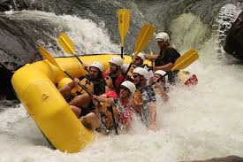
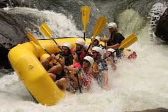
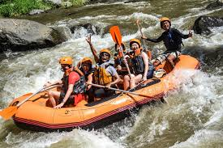
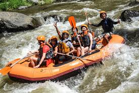

Welcome to White Water Rafting! Our mission is to provide thrilling rafting adventures while promoting environmental stewardship and safety. We strive to create unforgettable experiences for our clients while preserving the natural beauty of our rivers.

White Water Rafting
History
White Water Rafting was founded in 2024 by a group of adventure enthusiasts who wanted to share their love for rafting with others. Starting with just one raft and a passion for exploration, the company quickly grew to become a leading provider of thrilling river adventures.
Adventure Awaits You!
 


 
